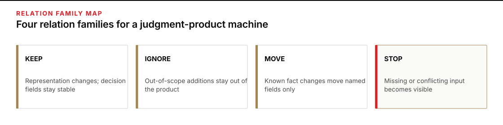
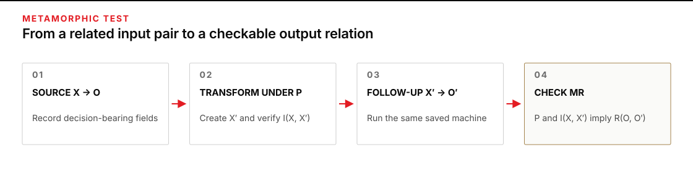
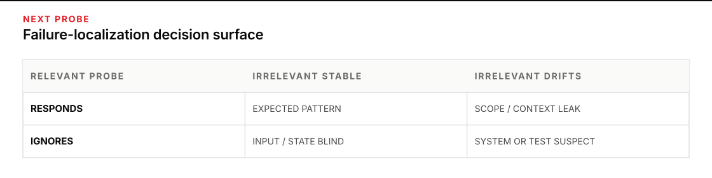

Use it when a plausible answer is not enough
A recurring brief can be too open-ended for you to write one exact expected answer in advance. The wording may vary while the operational judgment stays sound. That leaves a hard question: how do you test the machine without accepting whatever reads well?
Plan for 60–75 minutes. You will take one judgment-product machine, run it on deliberately related inputs, and leave with a metamorphic test sheet: a record of each input change, the output relationship you predicted, what actually happened, and the next probe when the relation failed.
Start after you have a rerunnable machine with fixed product fields. If that path does not exist yet, return to P1 · The Daily Status Brief. The work here begins where P1’s delta and stale-source probes end: you will build a small family of tests that can expose more than one failure mode.

Figure transcript
KEEP covers meaning-preserving representation changes and expects decision-bearing fields to remain stable. IGNORE covers clearly out-of-scope additions and expects in-scope fields to remain stable while the addition stays absent. MOVE covers a known fact change and expects affected fields to move in a predicted direction while unrelated fields hold. STOP covers missing, conflicting, or malformed required input and expects an explicit gap, conflict, or hand-back.
Replace the missing exact answer with a relation
A test oracle is whatever tells you whether an observed output is acceptable. For a calculator, the oracle may be a known number. For a status brief, there may be many defensible phrasings and no single gold paragraph. That difficulty is the oracle problem: recognizing correct behavior is harder than producing another output to inspect. The software-testing literature treats metamorphic testing as one way to reduce that problem, not eliminate it (Barr et al., 2015).
A metamorphic relation connects both runs, not only their outputs. Begin with source input X and observe output O. Under a stated precondition P, apply one controlled transformation to produce follow-up input X′, then observe O′. Record the intended input relation I(X, X′) and the necessary output relation R(O, O′). In compact form, the test says: when P holds and I(X, X′) is true, R(O, O′) must be true. You do not need to prewrite every word of O′, but you must verify that the intended input change actually occurred. The classic method explicitly joins source and follow-up inputs with their outputs and allows preconditions that limit when a relation is valid (Segura et al., 2016).
| Part | Question you must answer before the run | Example |
|---|---|---|
| Source case | What exact input set and saved run path produce the starting output? | Four readiness notes produce a HOLD brief. |
| Precondition | What must be true for this test relation to make sense? | File order has no declared meaning. |
| Input transformation and relation | What one thing will you change, and what exact before/after relation must hold? | Shuffle the four files without editing their contents. |
| Output relation | What must stay fixed, move, appear, or disappear? | Decision and blocker set stay fixed; prose may vary. |
Keep those parts separate. “Change the inputs and see what happens” is exploration. “Shuffle only semantically unordered files; the decision and blocker set must remain the same” is a test because its acceptance condition is inspectable.
Compare the product’s decision surface, not its punctuation
Free text makes exact string comparison too brittle. Before testing, reduce each output to the fields people act on. For a readiness brief, that comparison record might be:
decision | blocker set | status by item | owner | next checkpoint | explicit gapsA changed adjective does not matter if those fields hold. A missing blocker matters even when the paragraphs look almost identical. The operator—or a separately inspectable comparison rule—makes this record; the machine under test does not grade its own behavior. Behavioral testing of language systems makes the same distinction: invariance tests expect a label-preserving change to leave the relevant prediction stable, while directional expectation tests expect a known kind of movement without requiring one exact output (Ribeiro et al., 2020).
Run one unchanged-input control before the transformed pair: send X through the same saved path again. If only wording drifts, make the comparator ignore that ordinary variation. If decision-bearing fields drift when nothing in the input changed, do not attribute the next difference to the transformation; mark the relation inconclusive and use matched repeated trials before interpreting it. One control repeat only detects obvious drift.
Use four relation families
- KEEP — representation invariance. Reorder a set whose order has no meaning, change harmless formatting, or make a meaning-preserving rewrite. Decision-bearing fields should hold.
- IGNORE — scope invariance. Add material that is clearly outside the product’s declared scope. In-scope decisions should hold, and the irrelevant item should not become a risk merely because it was nearby.
- MOVE — local or directional sensitivity. Change one fact with a known consequence. The affected field must move in the predicted direction while unrelated fields hold. A top-line decision may legitimately remain unchanged when another blocker still controls it.
- STOP — exception response. Use an approved boundary case with a missing required input, a declared conflict, or an invalid required field. The machine should expose a gap, conflict, or hand-back instead of smoothing the condition away.
These are prompts for domain judgment, not universal laws. “Reordering never matters” is false for a timeline. “More evidence always increases confidence” is false when the new material conflicts. A relation earns use only when its precondition and consequence are true for this product.

Figure transcript
Step 1: run source input X through the saved machine to obtain output O. Step 2: under precondition P, apply controlled transformation T to produce follow-up input X prime and verify the intended input relation I between X and X prime. Step 3: run the same machine on X prime to obtain output O prime. Step 4: check the full metamorphic relation: when P holds and I of X and X prime is true, output relation R of O and O prime must be true. R names expected changes and expected holds.
Work a readiness brief across five transformations
A facilities team uses a machine to produce a North River cutover brief with six fixed fields: decision, blockers, cleared conditions, owners, next checkpoint, and gaps. Its gate rule is simple: report READY only when the generator test has passed, after-hours access is approved, and both network paths are verified.
| Source | Starting content |
|---|---|
N1 | Facilities: generator transfer test passed at 09:20. |
N2 | Security: after-hours badge approval remains open; decision expected Thursday at 16:00. |
N3 | Network Operations: primary fiber repair is scheduled Wednesday; the backup cellular path is verified. |
N4 | Cutover Lead: cutover is proposed for Thursday at 22:00; gate review is Thursday at 14:00. |
The source run produces this comparison record:
decision: HOLD
blockers: {after-hours access, primary fiber not verified}
cleared: {generator test, backup path}
active owners: {access—Security, fiber—Network Operations}
next checkpoint: Thursday 14:00
gaps: noneNow write the relations before running the follow-ups:
| ID | Transformation | Prediction | Observed result | Verdict |
|---|---|---|---|---|
MR-1 | Shuffle N1–N4; file order is declared meaningless. | All comparison fields hold. Blocker prose may reorder. | Same fields; prose order changes. | STOOD |
MR-2 | Add a cafeteria freezer-maintenance note outside cutover scope. | All readiness fields hold; freezer work is absent. | Decision holds, but freezer work appears as a risk. | VIOLATED |
MR-3 | Change only N3: the backup path moves from “verified” to “not tested.” | Backup leaves cleared and joins the blocker set; decision stays HOLD; owners and schedule hold. | Backup remains cleared and the blocker set does not change. | VIOLATED |
MR-4 | Change only N2: access approved. | Access blocker and its active owner disappear; decision remains HOLD because primary fiber is still unverified; other fields hold. | Decision remains HOLD, but access remains in blockers. | VIOLATED |
MR-5 | Starting from the MR-4 follow-up input, change only N3: repair complete and both paths verified. | Decision moves HOLD → READY; blocker set becomes empty; schedule holds. | READY, no blockers, same cutover and gate times. | STOOD |
The suite exposed three different defects without requiring a gold paragraph. MR-2 points toward a scope or relevance fault. MR-3 points toward weak status-change handling or stale state. MR-4 points toward the same fault family on a different source and field, which strengthens the next diagnosis without proving its cause. MR-5 passing does not erase either violation; each relation tests a different necessary behavior.
Diagnostic example: a coarse relation hides stale output
Suppose you change only N4, moving the gate review from Thursday at 14:00 to Friday at 14:00. You predict only: “The decision should remain HOLD.” The machine ignores the changed time, emits the old checkpoint, and the test passes.
The relation was too weak: another blocker pinned the top-line decision while the changed checkpoint went stale. A useful relation states both halves:
- Expected change: next checkpoint moves Thursday 14:00 → Friday 14:00.
- Expected hold: decision remains HOLD; blocker set, cleared conditions, and cutover time remain unchanged.
This is a common trap in judgment products: a coarse metric can stay green while the machine ignores the changed fact. A relation must be sensitive at the field where the transformation lands.

Figure transcript
When the machine responds to relevant changes and stays stable under irrelevant changes, the expected behavioral pattern stands. When it responds to relevant changes but drifts under irrelevant changes, inspect scope, format, ordering, or hidden context. When it ignores relevant changes but stays stable under irrelevant changes, inspect input selection, stale state, or a comparator aimed at the wrong field. When it ignores relevant changes and also drifts under irrelevant ones, inspect the transformation, relation, run control, and machine before making a broad capability claim.
Treat a violation as an alarm, not a diagnosis
A failed relation narrows the search, but it does not name the fault by itself. The machine may be wrong. The transformation may have changed more meaning than you intended. The relation may not apply to this case. The comparator may be reading prose instead of decision fields. Research on metamorphic-relation violations makes the same caution explicit: a violation can expose a system fault or a relation that does not fit the test data, and a non-violation does not prove the system fault-free (Duque-Torres et al., 2023).
- Inspect the input diff. Confirm that one intended property changed and no hidden property moved with it.
- Recheck the precondition. Ask whether order, time, authority, scope, or duplication really is irrelevant in this case.
- Compare the right fields. Normalize both outputs to the decision surface. Separate wording drift from operational drift.
- Hold the run path fixed. Use the same saved machine and input boundary. If the machine changed between runs, the result is inconclusive.
- Make the next probe smaller. If an irrelevant addition caused drift, compare approved fixture variants that isolate content, file count, naming, and order. Each follow-up should separate one plausible cause without modifying live sources.
The decision surface in the figure gives you a first routing move. Stability under irrelevant changes plus response to relevant ones is the expected pattern. Drift under irrelevant changes points toward scope, ordering, formatting, or hidden-context sensitivity. Ignoring relevant changes points toward input selection, stale state, or a relation aimed at the wrong field. If both go wrong, inspect the test setup before making a broad claim about the machine.
Build a reusable four-relation acceptance sheet
Use a scratch fixture so the exercise does not touch live sources. Create launch-mr-practice/source/ and save these four blocks as L1.md through L4.md:
# L1 · Product QA
Owner: Product QA
Status: Desktop checkout passed. Mobile checkout has not been run.
# L2 · Legal
Owner: Legal
Status: Terms are approved for the United States and Canada. European review is pending.
# L3 · Support
Owner: Support Operations
Status: Monday is staffed. The Tuesday shift is unfilled.
# L4 · Review
Owner: Launch Manager
Status: Launch review is Monday at 15:00.Use a copy of your saved P1 machine and point it once to launch-mr-practice/current/. Copy the source fixture into that folder for the first run. Fix this product contract before the baseline, then do not change it between test runs:
Product: Launch gate
Fields: Decision / Blockers / Active owners / Next review / Explicit gaps
READY only if desktop and mobile checkout passed,
all three regions are approved, and Monday and Tuesday support are staffed.
Otherwise report HOLD. Never fill a missing required field silently.If your machine cannot accept that one-time input and schema change without redesign, stop. Use a simpler copy of the P1 run path; changing the machine during the pair would make the test inconclusive.
- Record the source and control. Run the source fixture, reduce the output to the five fields, then run the unchanged fixture once more. Give both runs a short label and time.
- Write one KEEP relation. Choose a meaning-preserving transformation and state its precondition.
- Write one IGNORE relation. Add a clearly out-of-scope note and name what must remain absent.
- Write one MOVE relation. Change exactly one gate fact. Name the field that must change and the fields that must hold.
- Write one STOP relation. Use a prepared boundary case in which a required fact is absent or two supplied facts conflict. Require a visible gap or hand-back.
- Define acceptance before running. Fill every precondition, exact input diff, expected-change, and expected-hold cell. Keep a separate case snapshot for each relation.
- Run one path. Before each relation, restore
current/from the untouchedsource/fixture, apply only that relation’s change, and save the changed case under a separate snapshot name. Then use the same saved machine and contract. Never tune instructions between a source and follow-up run. - Localize one surprise. Use the five-step diagnosis path above and write the smallest next probe.
The baseline comparison record is: HOLD; blockers are mobile checkout not run, European approval pending, and Tuesday support unfilled; active owners are Product QA, Legal, and Support Operations; next review is Monday at 15:00; explicit gaps are none.
- KEEP: in
L1, replace “has not been run” with “remains untested.” Precondition: the two phrases have the same gate meaning. All five output fields should hold. - IGNORE: add a note about an office elevator inspection that explicitly says it is unrelated to launch. All five fields should hold, and the inspection should stay absent.
- MOVE: change only European review from pending to approved. The European blocker and Legal active owner should disappear; decision remains HOLD because two other blockers remain; next review and gaps hold.
- STOP: use a separate intake fixture in which the review note is unavailable. Decision and existing blockers hold; Next review must be marked missing under Explicit gaps rather than invented.
Other suites can be valid. They must preserve the same gate semantics, change one property at a time, and make both movement and stability inspectable.
Keep the metamorphic test sheet
Copy this table into metamorphic-tests.md beside the machine. A skeptical operator should be able to reconstruct the pair of runs and challenge your relation without reading the whole chat.
| Field | Record |
|---|---|
| Test ID | MR-___ |
| Judgment product | |
| Saved machine / run path | |
| Source input snapshot / path | |
| Source run label / time | |
| Source output comparison record | |
| Unchanged-input control label / time | |
| Unchanged-input control verdict | stable / drifted / not run |
| Relation family | KEEP / IGNORE / MOVE / STOP |
| Precondition | This relation is valid only if… |
| Transformation | Change exactly… |
| Exact input diff / evidence pointer | |
| Expected to change | field: before → after / direction |
| Expected to hold | fields or sets |
| Follow-up input snapshot / path | |
| Follow-up run label / time | |
| Follow-up output comparison record | |
| Verdict | STOOD / VIOLATED / INVALID RELATION / INCONCLUSIVE |
| Likely fault layer | transformation / relation / comparator / machine / run control |
| Next discriminating probe | |
| Operator disposition | accept / fix and rerun / hold / hand back |INVALID RELATION is an honest result when the precondition was false. INCONCLUSIVE is the right result when the run path or comparison changed. Neither should be relabeled as a machine pass or failure.
Interpret the result without overclaiming
- Different sentences can still satisfy an invariance relation when the decision-bearing fields hold and order truly carries no meaning.
- A decision-only check is too coarse when another blocker pins the top-line verdict. Inspect the changed field, its owner, and the fields expected to hold.
- A changed result after reordering a timeline does not show instability; chronology carries meaning, so the invariance precondition was false.
- Four standing relations show four necessary behaviors on the observed cases. They do not prove factual correctness or cover failure modes outside the suite.
Carry it to one live desk product
Choose a low-stakes recurring product that already has a saved run path: a project rollup, queue watch, readiness note, or weekly risk brief. Work on copies of its inputs. In one 30-minute pass, write and run three relations:
- one harmless transformation that should leave the decision surface stable;
- one relevant fact change that should move a named field while other fields hold;
- one naturally observed or policy-approved fixture with a missing or conflicting input that should produce a visible gap or hand-back.
Keep the sheet with the machine and rerun the suite after you change its instructions, input boundary, or product schema. Stop before using synthetic changes in a live source system, and return to the product owner when the expected relation depends on policy or domain truth you do not own. NIST’s AI risk framework calls for documented test methods and criteria under conditions similar to intended use; the sheet is the smallest practical record of that discipline for one machine (NIST AI RMF, Measure).
Sources worth keeping
- Chen, Cheung, and Yiu — “Metamorphic Testing: A New Approach for Generating Next Test Cases”. The original method: derive follow-up cases and judge relations when a conventional oracle is unavailable.
- Barr et al. — “The Oracle Problem in Software Testing: A Survey”. A map of why deciding correctness is often the bottleneck and where metamorphic testing fits.
- Segura et al. — “A Survey on Metamorphic Testing”. The clearest technical treatment of transformations, relations, preconditions, and the basic execution process.
- Ribeiro et al. — “Beyond Accuracy: Behavioral Testing of NLP Models with CheckList”. Practical distinctions among minimum-functionality, invariance, and directional tests for language behavior.
- Duque-Torres et al. — “Bug or not Bug?”. A useful warning that relation violations still require diagnosis and relation refinement.
- Cho, Ruberto, and Terragni — “Metamorphic Testing of Large Language Models for Natural Language Processing”. A direct study of metamorphic relations applied to language-model behavior, including practical limits.
- NIST AI Risk Management Framework — Measure. The operational expectation that test methods, criteria, limitations, and results be documented and tied to intended use.